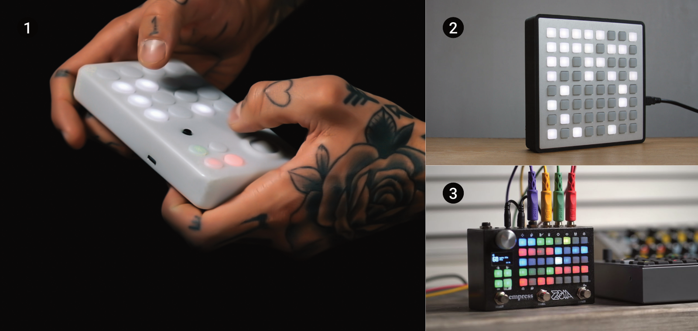
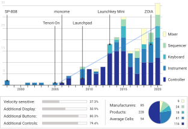
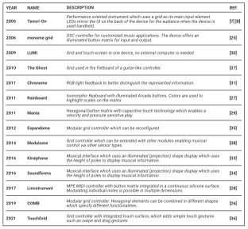
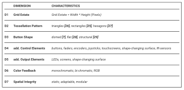
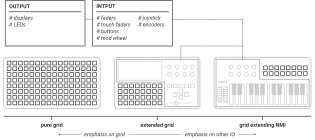
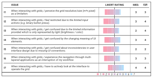
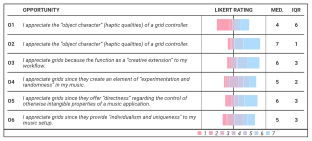

Musical Grid Interfaces: Past, Present, and Future Directions
Abstract
This paper examines grid interfaces which are currently used in many musical devices and instruments. This type of interface concept has been rooted in the NIME community since the early 2000s. We provide an overview of research projects and commercial products and conducted an expert interview as well as an online survey. In summary this work shares: (1) an overview on grid controller research, (2) a set of three usability issues deduced by a multi method approach, and (3) an evaluation of user perceptions regarding persistent usability issues and common reasons for the use of grid interfaces.
Author Keywords
History, Grid, Interfaces
CCS Concepts
•Human-centered computing → Interaction design → Interaction design theory, concepts and paradigms;


Today many musical instruments and controllers use grid interfaces in their designs. As grids we define illuminated button matrices.
Introduction
When considering the landscape of musical interfaces, even New Musical Instruments (NMI) often rely on established canonical interface forms. These include among others the keyboard, which is the common interface concept of instruments such as the piano, the organ or the accordion, and is as well commonly used in synthesizers, workstations, and samplers.
While the NIME community constantly creates new prototypes such as body controlled [1][2], tangible [3][4], or augmented [5][6] instruments, these concepts can be regarded as innovative interaction models, but fail to establish themselves as canonical interface archetypes in the long run. However, when looking into the current palette of commercial NMIs one can observe a new interface form rising over the last 15 years. More and more instruments contain as one of their main interface elements an illuminated button matrix, which we hereafter refer to as the grid.
The first publications concerning this interface type in the musical context were published by Nishibori and Iwai in 2005 and 2006 [7][8]. Since then, over 225 musical devices have been released on the market that use this interface concept in their designs and the amount is constantly rising (cf. Figure 2).
To discuss this shift within the scientific community, we present: (1) an overview on the development of grid devices, (2) a set of usability issues deduced by a multi-method approach, and (3) an evaluation of the user perception regarding these usability issues and general reasoning for the use of grids.


Timeline of grid device releases (data set). The graph shows the annual number of devices using a grid as a UI element, separated in five product categories.
Related Work
In the following we provide a definition of grid interfaces for the context of this paper and present an overview of grid research and developments.
Grid Definition
While previously [9] musical soft- and hardware systems have been named “grids”, we exclusively contemplate hardware interfaces, which we consider to be the musical equivalent of Low Resolution Lighting Displays (LRLD) [10]. While both are light-matrices that represent information with only a few pixels [11][12][13], in grids these are literally the touch-point for interaction, which depict and enable the manipulation of information. We use the following three properties for our definition of grids in the musical context:
Rectangular and irregular low resolution matrices with visible cell size of (,n∈N>1 )
Cells physically stand out from the interface surface
Cells are used for in- and output, but interaction and feedback are decoupled
Thus, we exclude (1) single buttons and row/column vectors as commonly used in step sequencers, (2) non-illuminated buttons as found in many drum pads as well as (3) touch screens [14] due to their lack of haptic buttons.
Keys, Buttons, and Button-Matrices
The usage of keys and buttons has a long tradition in musical instruments starting in the late 3rd century BC 1. Keys were used to trigger the sound generation or to operate instruments via levers and other mechanics. They were commonly laid out linearly, but later non-linear layouts were conceptualized [15] and diatonic and chromatic button matrices were used in different instruments. Expanding on ideas such as microtonality and alternative playing techniques, matrix-like layouts, called isomorphic keyboards, got more popular [16][17].
Since 1963 push-button matrices were used in electronic devices (cf. phones) and research [18] and development (US3676607A) created new technologies which influenced the design of later grid interfaces. Early on, keys were used multifunctionally within telephones to enter both numbers and letters. After production, however, attached labels and analog components are permanent and prevent subsequent adaptation of the functions.
Illumination has been later added to buttons to highlight them in the dark or to redundantly indicate their state [19][20]. Next2, they were used for decoupled feedback [21], which allowed information to be provided to system operators on demand in control units with illuminated control panels (cf. NASA).
Since the 1980s, non-illuminated button matrices were used as musical interfaces for finger drumming and sequence programming. The Roland SP-808 can be considered as one of the first examples of such a multifunctional LED-button matrix used in a commercial instrument (see Figure 2).
NMI Design: Instrument vs. Controller
Concerning interfaces in the context of musical instruments, we refer to the first layer of the New Musical Instrument (NMI) [22][23] framework, which distinguishes between (1) the control layer which is connected via the (2) respective mapping to a (3) sound source.
Acoustic instruments provide an implicit mapping, e.g. such as the mechanics between the keys (interface) and strings of a piano (sound source) directly transmit and translate key interaction to sound generation; electronic instruments, on the other hand, have to explicitly design this mapping [24]. For this work, we use the term instrument for devices which provide a mapping as well as a sound generator and the term controller if the device only offers the interface layer.
This is important since grid NMIs are “compositional as much as they are about physical performance” (Peter Kirn). Due to these different usage scenarios, manufacturers and users conceptualize and approach grid design differently. From a blank canvas (controller) which is “much more of a tool than an instrument” (Ed) all the way to in a NMI embedded and integrated interface.


Papers which cover musical grid interfaces in chronological order.
Developments of Grid Interfaces in the Musical Context
We provide a chronological overview of the interfaces described in the following section (see Figure 3).
The first interfaces which extensively explored the capabilities of musical grids were the Tenori-On [7][8] and the monome grid [25]. While the Tenori-On is a self-contained instrument which uses a button matrix for tactile input and visual output, the monome grid is a generic controller for sound-applications. Thus, these devices represent the two fundamental NMI design strategies: (1) the grid as an instrument, a symbiosis of interface and sound source, and (2) the grid as a controller, a from the sound source decoupled, freely assignable control surface.
In both cases the grid is the central interface which can be varied in different properties. The size of the button matrix (grid estate) determines the amount of information to be accessed and displayed. The button shape defines the tessellation pattern, which affects the layout and organization of the information being displayed. Mainly platonic tessellation patterns are used, such as triangular [26], rectangular [25], and hexagonal [27] patterns. The button shape can be domed [7], flat [28], or nearly integrated [29] in the surface, being only texturally distinguishable.
While initially, monochrome and binary-state LEDs were used, later, various-brightness [7], bi-chromatic [30] and RGB-LEDs [31] improved the color feedback. Though the extended color space provides more details, complex information is still hard to convey [10]. Thus, additional output elements such as screens [30] were used to enable actions on the device, previously only applicable on a computer. Further, shape-display technology [32] used the cell height as an output modality [33][34] expanding the former flat grid into the third dimension.
Regarding input interactions, grids adopted features such as: continuous perpendicular input (velocity and aftertouch [29]), planar interactions (vibrato, bending, sliding [28]), constructing shapes from modular grid elements [26], and the manipulation of the grid's 3D-shape [33][34]. Other devices further added additional control elements such as knobs, sliders, antennas [35], and touch screens [30] to grid devices to allow interactions beside the perpendicular actuation of buttons. Most recent explorations add capacitive touch technology to the silicone button surface which enables interactions such as swiping [36].
While most grids are stand-alone devices, grids were also embedded into instrument-like [37] designs which affects the body position and the movement patterns during play, into modular designs to adapt to user needs [35], and have been further used in collaborative settings [38] which take into account group dynamics and collaborative musical processes.
Taxonomy of Grid Interfaces
We collected and reviewed a comprehensive data set of commercial grids, using a pearl growing search method [39] applied to images, web pages, and forum comments3 (start terms: “grid controller”, “button matrix”). In summary 228 grid devices (see Figure 2) were collected, released between 1998 and the beginning of 2021. The collected device specifications are available as a data set which can be used as a source by other researchers investigating this topic (data set).
We identified seven design dimensions and the associated characteristics (cf. D1-D7 in Figure 4) based on the related work and the above mentioned data set. These are in the following considered to identify grid usability issues.


Design dimensions of musical grid interfaces.
Hardware
The button matrix of a grid can be classified by the grid-estate, the tessellation pattern and the button design. These features in combination shape a grid's primary appearance. We found that the grid resolution ranges from 2*2 up to 32*16 and has on average 8*4 buttons (median). About 98% of all devices use a rectangular and only 2% a hexagonal tessellation pattern. 50% of the devices integrate a display into their design, 83% use additional buttons, and 79% use other input elements such as keys, encoders or faders. We further found that 25% of all collected devices integrated multiple grids in one device. Common examples would be DJ equipment, which, based on the idea of a two deck system, provides two sets of the same controls. But also other concepts were identified, such as devices which provided a narrower matrix for clip control and finger drumming as well as a wider one for sequence programming. Only 11% of all devices can be classified as grid-only controllers, i.e. that they only offer a button-matrix as their interface and no additional controls beside that.
While the classification of a grid-only device is unambiguous, other device types are rather classified in a continuum depending on the amount of additional interface-elements (see Figure 5). Devices having a stronger focus on the grid as their main interface can be classified as extended grids, if the grid becomes less important it is rather considered a grid extending a NMI.


Different devices differ in the number and importance of additional user interface elements used in their design.
As stated by a user, this different form factor provided by the hardware properties of grid-only devices and the resulting interaction implications achieve “a break from the comfortable tyranny from the piano keyboard” (Stretta).
Input Interactions
While all hardware properties define a grid's overall affordance, the performed interactions primarily focus on the buttons, which “afford pressing, but the grid itself affords carrying, holding, and a lot more” (emenel). Standard interactions with the matrix include pressing and holding as well as press and button combinations (double click, shift, combination within matrix). These are performed single-/two-handed, using the thumbs and all fingers. Grids are mostly used stationary and occasionally handheld.
By reviewing several hours of grid performances via video platforms, we identified advanced interactions, such as (1) strumming the buttons, (2) playing multiple grids at once, and (3) gestural input via proprietary hardware (leap motion, wii controller).
Grid interactions can be categorized as Live Playing (action and sound are directly coupled), Conducting (actions and sound are indirectly coupled, cf. triggering loops or drum-rolls), and Operating (actions and sound are not coupled). These categories reflect in the product types we identified which include: Instruments, Keyboards, Controllers, DJ-Mixers, Sequencers.
UI Design
The visual design of a grid application naturally implies the available interactions to the user. Following Norman [40], “the illumination patterns are signifiers of the grid and the application that is being used with the grid” (papernoise). Without visual feedback, a button matrix can only indicate interactions statically (labels, icons). The light feedback allows for adaptive signifiers based on modes, context, or time. Thus, the interface becomes understandable beyond its physical affordance. Themes in grid UIs are:
Physicality: Objects on the grid behave like objects in the physical world. Lights move due to forces, are reflected of obstacles or trigger events based on collisions. E.g. the Tenori-On offered different modes “that modeled physical processes including a bouncing ball” (Chris Mayes-Wright).
Familiarity: The grid imitates musical interfaces. Columns represent faders, or cells function as keys/frets. Musicians can apply their prior-knowledge (finger-placement, chord shapes) but are not restricted to physical limitations (multiple notes on one string, pitch intervals).
Direct Transfer: Digital UI elements (cf. Ableton Live’s clip matrix) are displayed on the grid. Colors are used to support orientation between the screen and the grid. Also older metaphors such as tapes and play/record heads can be found in grid applications.
Usability Issues and Solutions
We identified usability issues by (1) analyzing the presented data set using a theory driven approach in respect to usability heuristics [41], (2) backed the analysis with statements found in user forums, and (3) discussed the issues during expert interviews (n=4). We found the following usability issues:
(U1) Limited Information Transfer
While the visual properties of grids improve the overall information transfer [25], users struggle with limitations such LRLDs pose. They can comprehend the information when creating projects, but encounter problems when either approaching unfamiliar apps (old, third-party, etc.) (andrew) or learning about new apps “by only looking at the video” (axel). Since only up to 12 colors should be used to present distinguishable information [42], grid users additionally “label their devices” (gli), manufacturers add icons or use displays to provide complex information in addition to LED colors. While these are common LRLD issues, it is assumed that regular usage [11] mediates these problems and that users can “even get to the point of muscle memory” (Peter Kirn), however the often generic nature of grids stands in contradiction to this point, since the context and thus the related interaction patterns can change dramatically.
(U2) Limited Control
Making interfaces more expressive is a common HCI problem [43][44]. While many users are comfortable with binary input actions “using the aspect of time” (Peter Kirn), others miss features such as velocity and after-touch and accompanying interface-elements such as “controllers [and] more knobs” (Wannop). Thus, manufacturers add UI elements (D4) to create an optimized workflow for specific applications (cf. Ableton Push [45]). This limits the generic nature and adaptability, but otherwise grids would remain restricted regarding many interactions. While, some typical controls such as faders can be imitated by rows or columns of grid cells, others such as rotary encoders [46], can't be replicated with buttons.
(U3) Limited Grid-estate
The challenge of app design for LRLDs and low-res devices lies in the effective use of the available space [10]. Furthermore, grids not only passively display but actively provide access to information. The space can either be (1) limited by a small resolution (karol), (2) obstructed by infrequently used UI elements, or (3) is unsuitable for a larger and more intuitive UI (scanner). Since static UI elements compromise on the grid-estate, two strategies can be observed: (1) external buttons are used for additional functions (e.g. shift, navigation) or (2) the top row is permanently allocated for these. Our analysis showed that while some grids provide high resolutions such as 32*16 for which the reduced grid estate might not be an issue, most grids only provide about 8*4 buttons, this highlights the need for an effective use of the available space.
Cross-domain Driven Solutions
To approach the presented usability issues, we considered other HCI domains to inform solutions for the grid context, which enhance the capabilities without compromising their generic character.
P1: While we excluded interfaces such as the Lightpad Block or the Erae Touch from the grid device data set, due to their continuous interface surface, we acknowledge a promising approach in increasing information density by offering multiple LEDs or even small screens per cell. Thus, iconographic labels could be displayed, as already explored in the context of computer keyboards [47], or even Gestalt Psychology [48] can be used to visually bridge the gaps in the physical interface to highlight connected UI-elements.
P2: Since grid cells are limited regarding many interactions, radar chips [49], which are capable of tracking midair gestures, can be used to expand user control. Finger gestures such as turning an invisible knob could be used to adjust values represented by grid cells. Further, input expressiveness can be increased by considering flexible surface UIs [50][51]. Thereby, 3D interactions can enable the manipulation of grid data or allow for more expressiveness.
P3: Since the screen real-estate problem is well known for mobile devices, we propose that concepts developed for this domain should be explored in the grid context. Force dependent gestures [52][53], posture dependent gestures [54] or edge/bezel interaction [55][56][57] are used to access additional features on demand. Touch gestures provide a rich resource of ubiquitous and familiar interactions that can be transferred to grids.
Why to Use Musical Grid Devices?
To investigate reasons for the use of grids as musical interfaces, we conducted an online survey with grid users (n=26). The survey covered participants' (1) opinion on usability issues and (2) general reasons for using grid devices. The questions were synthesized from expert interviews (n=4) and considered six design opportunities of NMI's [58] (see Figure 7). All questions were rated via 7-point Likert scales. Further, participants provided qualitative text answers.
Participants
Participants were recruited via the monome forum (llllllll.co), due to its expertise-wise homogeneous user base. The 26 participants (22 male, 3 unspecified, 1 non-binary; 5: 20-29 years, 12: 30-39 years, 9: 40-60+ years) were experienced in music making (5-44 years) and grid usage (1-13 years). Two of the participants did not own a grid when they took the survey. The rest owned one or multiple devices. As expected, 24 participants owned at least one monome grid. The devices owned, covered open source hardware, generic controllers, instruments, software controllers, and sequencers. All participants agreed that their data would be used in anonymized form for scientific publications.
Restrictions and Limitations of Grids
During the expert interview we collected seven usability issues of grid devices in comparison with other music technologies (see Figure 6) and phrased statements based on these (I1-I7). During the survey, participants had to indicate their agreement with the statements. Our study indicated that the issues created a broad response, ranging from complete agreement (7) to complete disagreement (1). This has been indicated by high Interquartile Range (IQR) values [59]. Overall, the participants tended to disagree with the statements I1-I6. Participants further added the following issues:
cheap hardware quality and poor design
required expertise
poor application design and documentation
poor software integration
One participant explicitly stated to disagree with I1-I2 since “these are positives, and one of the reasons to use the grid” (ID4). When comparing grids to touchscreens as an alternative technology, participants stated haptics (n=19) and other general properties (n=6) such as the portability, durability, tactual experience, and minimalism as advantages. Further, 5 participants clearly appreciated the creative constraints due to properties we framed as issues.


Reasons to Use Grid Devices
Based on the free text answers, we deduced the following reasons to use and positive aspects of grid devices :
Openness and Adaptability. (n=16) Grid devices are often reprogrammable, flexible in use, and stimulate experimentation. This was considered to be important, since “other MIDI input device formats like keyboards are hard to use in a context outside of traditional note input” (ID9), further they “provide an open platform“(ID10) for self-defined musical processes.
Haptics and Immediacy. (n=10) Grid systems create an enjoyable tactile experience since they are “appealing instruments, both nice to look at and pleasant to touch” (ID17) and further allow users to feel and “push down multiple buttons at once” (ID6) which gives immediate access to the digital information.
Design and Constraints. (n=7) Restrictions such as the limited resolution or feedback define the grid experience and are even “enjoyed embracing the constraints of the device in creative ways” (ID6). Users who design their own applications are guided by narrowing down the possibility space.
Compatibility and Community. (n=7) Since grids often use common and open protocols such as OSC [60] or MIDI they are compatible with various soft-/hardware. Further, user's found the strong community involved to be crucial since many are not programmers and thus the support and creative stimulation are essential.
Approach and Metaphors. (n=6) Grids are not an end in themselves, but rather are defining for the “interaction with these processes [and the] performance practice” (ID10). They are seen as fitting for many interactions such as programming patterns in the time domain and are building on metaphors or thinking structures of the users.
These reasons as well reflect the most supported usage opportunities (see Figure 7). While O2-O6 were supported, especially O2, O3, and O5 created high agreement. Contextualizing these with the deduced reasons, O2 and O3 support Openness and Adaptability, whereas Haptics and Immediacy is supported by O5. It is interesting, that 19 participants stated to appreciate the haptic qualities of grids, but O1 which is concerned with the grids' “object character” only generated a neutral response.


Findings
Looking back at the collected data set and presented resources, we derive two main aspects, which will influence future grid developments from our perspective.
Need for more control. As reflected by the current spectrum of available grid devices and mentioned by the participants, users wanted to gain more control during interaction. This includes expressiveness related features such as MIDI MPE abilities but also the combination with other UI elements which are more suitable for certain tasks.
Protecting the white canvas. Adding more controls stands in clear contrast with users’ wish to maintain the grid as a white canvas. A hardware platform that is more about enabling them to realize and implement their own musical ideas, then about offering a single predefined musical tool. Or rephrased, the power of generic grids is more to be potentially anything, than to be a specific thing which would imply restrictions regarding other approaches.
Discussion
While we found that grids theoretically have certain usability issues, our online survey indicates a very different picture. Users rejected these issues and pointed out that these can also represent advantages rather than shortcomings. While, these questions clearly polarized the participants, they all agreed on haptics being an advantages of grids over comparable interfaces on e.g. touchscreens. Here, we clearly see the advantage of tangible properties such as the ability to tactually experience objects [61] by feeling their surface, feeling distinct interaction elements [62], and experience a passive haptic feedback when pushing buttons [63].
This is a feature which is appreciated by musicians [64][65] when comparing physical instruments to musical touch screen applications in general. If the only advantage of grids is their haptics, there is a vivid discussion among the community that in the foreseeable future advanced display technologies, which incorporate shape changing surfaces [66][67][68], will make grid devices obsolete.
Our study points in a different direction. While we presented restrictions related to the low-res nature of grid devices to the participants, they insisted that these are creative constraints. By having the possibility space limited their creative processes were fertilized [69] and the users perspective on musical processes is constantly questioned and reinvented.
Looking at these constraints, we argue that they also add to the complexity of grids. The limited resolution prevents complex information to be displayed and binary input restricts interaction and expression. So why do users stick to such complex interfaces over other options? A derived hypothesis could be that musicians in general are used to high-threshold interfaces.
Learning to play instruments not only requires the development of physical abilities but also to create an understanding of the underlying context and processes. While these factors slow down the learning process they enable creative expression in the long run. As interaction designers working in the musical domain we not only have the responsibility to design technologies that are usable for novice users [70], but we also have to work as NMI-luthiers [71] creating instruments which enable users to reach their full potential.
While “acoustic musical instruments have settled into canonical forms, taking centuries, if not millennia” [72], interfaces for NMIs only had decades to explore alternative forms of control so far. Such as the musical keyboard is not exclusive to pianos in the acoustic realm, the grid is the closest artifact we have to a ubiquitous canonical interface for NMIs.
Considering usage patterns and interactions we can already observe that specific approaches are more successful than others. How to think of musical layouts, how to represent time-based information, and how to interact is further converging to a more standardized way. Interestingly, the collected answers of the participants in our online survey did not clearly distinguish between the concept of a controller and an instrument, just as most pianists would not see the keyboard as a part that can be separated from the piano as a whole.
This more or less indicates that the grid for the users becomes the instrument. However, can the grid as a blank, flexible, and generic interface ever be a canonical instrument? Hence, instead of conceiving the grid as a canonical instrument, we should rather conceptualize it as a canonical interface form. While this interface form is currently restricted by design, users asked for more expression and control.
The question persists, how to offer these without compromising a grid’s genericness? We pointed out three yet unexplored design approaches to expand the capabilities of generic grid devices. We further showed through our data set that even if the grid turns into a common and widespread interface, further exploration and refinement is still to be done. We believe that the expressive power of touch gesture input can be further enhanced by integrating touch technology directly into the silicone, as was done by Teyssier et al. [73], making the silicone the matter implicitly involved in the sound generation process.
Conclusion
Proprietary hardware interfaces are closed systems by design, however, the monome design philosophy and the resultant community are pushing the idea of the grid as an open platform for musical interfaces. Hardware manufacturers are already implementing common protocols (MIDI, OSC) in their devices which enables users to hack, reuse, and customize these. In this vein, more manufacturers start to publish documentations and offer frameworks to easily apply their interfaces beyond the intended context (Novation, Ableton, Roli). Even software solutions are offered for users without coding-knowledge to customize their devices using toolbox systems.
In summary, we consider the current developments as an exiting opportunity to further investigate new interaction concepts in the realm of grids which keep the generic qualities of the original idea and thus expand the possibilities users of grids have in the design of their applications without compromising on features such as form factor or expressiveness.
The collected works in this paper present an overview over the last 15 years of grid development since the introduction of the Tenori-On and the monome grid. We consider the here proposed ideas as a basis for discussion about the future of grid controllers. Overall, we see the grid as an increasingly important interface for NMIs that offers different approaches to tasks of modern musicians such as playing and sequencing instruments and furthermore due to its openness pushes users to delve into the interface and thus explore their individual art of interaction.
Footnotes
- ↩
US3849621A: https://patents.google.com/patent/US3849621
↩We will later use forum quotes to emphasize usability issues and opinions in the context of grid devices.
↩
Citations
- ↩Lyons, M. J., & Tetsutani, N. (2001). Facing the Music: A Facial Action Controlled Musical Interface. In CHI ’01 Extended Abstracts on Human Factors in Computing Systems (pp. 309–310). Seattle, Washington: Association for Computing Machinery. https://doi.org/10.1145/634067.634250
- ↩Bomba, M. S., & Dahlstedt, P. (2019). Somacoustics: Interactive Body-as-Instrument. In M. Queiroz & A. X. Sedó (Eds.), Proceedings of the International Conference on New Interfaces for Musical Expression (pp. 95–100). Porto Alegre, Brazil: UFRGS. https://doi.org/10.5281/zenodo.3672880
- ↩Bennett, P., & O’Modhrain, S. (2008). The BeatBearing: a tangible rhythm sequencer. In Proc. of NordiCHI (Vol. 2008).
- ↩Jordà, S., Geiger, G., Alonso, M., & Kaltenbrunner, M. (2007). The ReacTable: Exploring the Synergy between Live Music Performance and Tabletop Tangible Interfaces. In Proceedings of the 1st International Conference on Tangible and Embedded Interaction (pp. 139–146). Baton Rouge, Louisiana: Association for Computing Machinery. https://doi.org/10.1145/1226969.1226998
- ↩Bevilacqua, F., Rasamimanana, N. H., Fléty, E., Lemouton, S., & Baschet, F. (2006). The augmented violin project: research, composition and performance report. In 6th International Conference on New Interfaces for Musical Expression (NIME 06) (pp. 402–406). Paris, France.
- ↩Thorn, S. D. (2018). Alto.Glove: New Techniques for Augmented Violin. In T. M. Luke Dahl Douglas Bowman (Ed.), Proceedings of the International Conference on New Interfaces for Musical Expression (pp. 334–339). Blacksburg, Virginia, USA: Virginia Tech. https://doi.org/10.5281/zenodo.1302603
- ↩Nishibori, Y., & Iwai, T. (2005). TENORI-ON. In ACM SIGGRAPH 2005 Emerging Technologies. New York, NY, USA: ACM. https://doi.org/10.1145/1187297.1187321
- ↩Nishibori, Y., & Iwai, T. (2006). TENORI-ON. In Proceedings of the International Conference on New Interfaces for Musical Expression (pp. 172–175). Paris, France. Retrieved from http://www.nime.org/proceedings/2006/nime2006_172.pdf
- ↩Adeney, R., & Brown, A. R. (2009). Performing with grid music systems. In Improvise : The Australasian Computer Music Conference (pp. 102–110). https://doi.org/10.1080/07494460802663967
- ↩Hoggenmueller, M., Tomitsch, M., & Wiethoff, A. (2018). Understanding Artefact and Process Challenges for Designing Low-Res Lighting Displays. In Proceedings of the 2018 CHI Conference on Human Factors in Computing Systems (p. 259:1-259:12). New York, NY, USA: ACM. https://doi.org/10.1145/3173574.3173833
- ↩Wisneski, C., Ishii, H., Dahley, A., Gorbet, M., Brave, S., Ullmer, B., & Yarin, P. (1998). Ambient Displays: Turning Architectural Space into an Interface between People and Digital Information. In N. A. Streitz, S. Konomi, & H.-J. Burkhardt (Eds.), Cooperative Buildings: Integrating Information, Organization, and Architecture (pp. 22–32). Berlin, Heidelberg: Springer Berlin Heidelberg.
- ↩Prante, T., Röcker, C., Streitz, N., Stenzel, R., Magerkurth, C., Van Alphen, D., & Plewe, D. (2003). Hello. wall–beyond ambient displays. In Adjunct Proceedings of Ubicomp (Vol. 2003, pp. 277–278).
- ↩Streitz, N. A., Röcker, C., Prante, T., Stenzel, R., & van Alphen, D. (2003). Situated interaction with ambient information: Facilitating awareness and communication in ubiquitous work environments. In Tenth International Conference on Human-Computer Interaction (HCI International 2003).
- ↩David, D., Granas, L., Konig, J., Moody, N., & Santangelo, J. (2009). TouchTones: Multi-user Collaborative Music Composer. In Proceedings of the ACM International Conference on Interactive Tabletops and Surfaces (p. 12:1-12:1). New York, NY, USA: ACM. https://doi.org/10.1145/1731903.1731953
- ↩Helmholtz, H. (2013). On the sensations of tone. Courier Corporation.
- ↩Milne, A., Sethares, W., & Plamondon, J. (2007). Isomorphic controllers and dynamic tuning: Invariant fingering over a tuning continuum. Computer Music Journal, 31(4), 15–32.
- ↩Maupin, S., Gerhard, D., & Park, B. (2011). Isomorphic tessellations for musical keyboards. In Proceedings of Sound and Music Computing Conference (pp. 471–478).
- ↩R. L. Deininger. (1960). Human factors engineering studies of the design and use of pushbutton telephone sets. The Bell System Technical Journal, 39, 995–1012.
- ↩Plotnick, R. (2012). At the Interface: The Case of the Electric Push Button, 1880–1923. Technology and Culture, 53(4), 815–845.
- ↩Plotnick, R. (2015). What Happens When You Push This?: Toward a History of the Not-So-Easy Button. Information &Culture, 50(3), 315–338. https://doi.org/10.7560/IC50302
- ↩Janlert, L.-E. (2014). The Ubiquitous Button. Interactions, 21(3), 26–33. https://doi.org/10.1145/2592234
- ↩Rovan, J. B., Wanderley, M. M., Dubnov, S., & Depalle, P. (1997). Instrumental gestural mapping strategies as expressivity determinants in computer music performance. In Kansei, The Technology of Emotion. Proceedings of the AIMI International Workshop (pp. 68–73).
- ↩Hunt, A., Wanderley, M. M., & Kirk, R. (2000). Towards a model for instrumental mapping in expert musical interaction. In ICMC.
- ↩Hunt, A., Wanderley, M. M., & Paradis, M. (2003). The importance of parameter mapping in electronic instrument design. Journal of New Music Research, 32(4), 429–440.
- ↩Dunne, J. (2007). Monome 40h Multi-Purpose Hardware Controller. Computer Music Journal, 31(3), 92–94. https://doi.org/10.1162/comj.2007.31.3.92
- ↩Rossmy, B., & Wiethoff, A. (2019). COMB – Shape As a Meaningful Element of Interaction. In Proceedings of the Thirteenth International Conference on Tangible, Embedded, and Embodied Interaction (pp. 287–295). New York, NY, USA: ACM. https://doi.org/10.1145/3294109.3295646
- ↩Park, B., & Gerhard, D. (2013). Rainboard and Musix: Building dynamic isomorphic interfaces. In Proceedings of the International Conference on New Interfaces for Musical Expression (pp. 319–324). Daejeon, Republic of Korea: Graduate School of Culture Technology, KAIST. https://doi.org/10.5281/zenodo.1178632
- ↩Linn, R. (2017). Polyphonic multi-dimensional controller with sensor having force-sensing potentiometers. Google Patents.
- ↩Snyder, J. (2011). Snyderphonics Manta Controller, a Novel USB Touch-Controller. In Proceedings of the International Conference on New Interfaces for Musical Expression (pp. 413–416). Oslo, Norway. Retrieved from http://www.nime.org/proceedings/2011/nime2011_413.pdf
- ↩Gao, M., & Hanson, C. (2009). LUMI : Live Performance Paradigms Utilizing Software Integrated Touch Screen and Pressure Sensitive Button Matrix. In Proceedings of the International Conference on New Interfaces for Musical Expression (pp. 58–59). Pittsburgh, PA, United States. Retrieved from http://www.nime.org/proceedings/2009/nime2009_058.pdf
- ↩Vallis, O., Hochenbaum, J., Murphy, J., & Kapur, A. (2011). The chronome: A case study in designing new continuously expressive musical instruments. In Proceedings of the Australasian Computer Music Conference (ACMC) 2011.
- ↩Ishii, H., Leithinger, D., Follmer, S., Zoran, A., Schoessler, P., & Counts, J. (2015). TRANSFORM: Embodiment of “Radical Atoms” at Milano Design Week. In Proceedings of the 33rd Annual ACM Conference Extended Abstracts on Human Factors in Computing Systems (pp. 687–694). New York, NY, USA: ACM. https://doi.org/10.1145/2702613.2702969
- ↩Xiao, X., Haddad, D. D., Sanchez, T., van Troyer, A., Kleinberger, R., Webb, P., … Ishii, H. (2016). Kinéphone: Exploring the Musical Potential of an Actuated Pin-Based Shape Display. In Proceedings of the International Conference on New Interfaces for Musical Expression (Vol. 16, pp. 259–264). Brisbane, Australia: Queensland Conservatorium Griffith University. Retrieved from http://www.nime.org/proceedings/2016/nime2016_paper0051.pdf
- ↩Colter, A., Davivongsa, P., Haddad, D. D., Moore, H., Tice, B., & Ishii, H. (2016). SoundFORMS: Manipulating Sound Through Touch. In Proceedings of the 2016 CHI Conference Extended Abstracts on Human Factors in Computing Systems (pp. 2425–2430). New York, NY, USA: ACM. https://doi.org/10.1145/2851581.2892414
- ↩Adu, A. A., Mendoza, K. A., Spalding, T. C., & Trinh, F. T. (n.d.). Electronic Music Interaction: modern and alternative interactions with music devices.
- ↩Rossmy, B., Unger, S., & Wiethoff, A. (2021). TouchGrid – Combining Touch Interaction with Musical Grid Interfaces. In Proceedings of the International Conference on New Interfaces for Musical Expression.
- ↩Rothman, P. (2010). The Ghost : An Open-Source, User Programmable MIDI Performance Controller. In Proceedings of the International Conference on New Interfaces for Musical Expression (pp. 431–435). Sydney, Australia. Retrieved from http://www.nime.org/proceedings/2010/nime2010_431.pdf
- ↩Barraclough, T. J., Murphy, J., & Kapur, A. (2014). New Open-Source Interfaces for Group Based Participatory Performance of Live Electronic Music. In Proceedings of the International Conference on New Interfaces for Musical Expression (pp. 155–158). London, United Kingdom: Goldsmiths, University of London. Retrieved from http://www.nime.org/proceedings/2014/nime2014_309.pdf
- ↩Schlosser, R. W., Wendt, O., Bhavnani, S., & Nail-Chiwetalu, B. (2006). Use of information-seeking strategies for developing systematic reviews and engaging in evidence-based practice: the application of traditional and comprehensive Pearl Growing. A review. International Journal of Language &Communication Disorders, 41(5), 567–582. https://doi.org/10.1080/13682820600742190
- ↩Norman, D. A. (2008). THE WAY I SEE IT Signifiers, Not Affordances. Interactions, 15(6), 18–19. https://doi.org/10.1145/1409040.1409044
- ↩Inostroza, R., Rusu, C., Roncagliolo, S., & Rusu, V. (2013). Usability Heuristics for Touchscreen-Based Mobile Devices: Update. In Proceedings of the 2013 Chilean Conference on Human - Computer Interaction (pp. 24–29). Temuco, Chile: Association for Computing Machinery. https://doi.org/10.1145/2535597.2535602
- ↩Harrower, M., & Brewer, C. A. (2003). ColorBrewer.org: An Online Tool for Selecting Colour Schemes for Maps. The Cartographic Journal, 40(1), 27–37. https://doi.org/10.1179/000870403235002042
- ↩McPherson, A. (2015). Buttons, Handles, and Keys: Advances in Continuous-Control Keyboard Instruments. Computer Music Journal, 39(2), 28–46. https://doi.org/10.1162/COMJ\_a\_00297
- ↩Marzo, A. (2019). Bouncy Buttons: Turning Standard Buttons into Pressure-Sensitive Inputs. In Proceedings of the XX International Conference on Human Computer Interaction. Donostia, Gipuzkoa, Spain: Association for Computing Machinery. https://doi.org/10.1145/3335595.3335644
- ↩Bell, A. P. (2017). The pedagogy of Push: Assessing the affordances of Ableton’s “Instrument.” Musikformulare Und Presets. Musikkulturalisierung Und Technik/Technologie.
- ↩Card, S. K., Mackinlay, J. D., & Robertson, G. G. (1990). The Design Space of Input Devices. In Proceedings of the SIGCHI Conference on Human Factors in Computing Systems (pp. 117–124). Seattle, Washington, USA: Association for Computing Machinery. https://doi.org/10.1145/97243.97263
- ↩Block, F., Gellersen, H., & Villar, N. (2010). Touch-Display Keyboards: Transforming Keyboards into Interactive Surfaces. In Proceedings of the SIGCHI Conference on Human Factors in Computing Systems (pp. 1145–1154). Atlanta, Georgia, USA: Association for Computing Machinery. https://doi.org/10.1145/1753326.1753498
- ↩Wertheimer, M. (1912). Experimentelle Studien über das Sehen von Bewegung. Zeitschrift Für Psychologie, 61.
- ↩Wang, S., Song, J., Lien, J., Poupyrev, I., & Hilliges, O. (2016). Interacting with Soli: Exploring Fine-Grained Dynamic Gesture Recognition in the Radio-Frequency Spectrum. In Proceedings of the 29th Annual Symposium on User Interface Software and Technology (pp. 851–860). New York, NY, USA: ACM. https://doi.org/10.1145/2984511.2984565
- ↩Rossmy, B., & Wiethoff, A. (2019). StringTouch: A Scalable Low-Cost Concept for Deformable Interfaces. In Extended Abstracts of the 2019 CHI Conference on Human Factors in Computing Systems (p. INT004:1-INT004:4). New York, NY, USA: ACM. https://doi.org/10.1145/3290607.3313245
- ↩Rossmy, B., Rümelin, S., & Wiethoff, A. (2021). StringTouch - From String Instruments towards New Interface Morphologies. In Proceedings of the Fifteenth International Conference on Tangible, Embedded, and Embodied Interaction. Salzburg, Austria: Association for Computing Machinery. https://doi.org/10.1145/3430524.3440628
- ↩Heo, S., & Lee, G. (2011). Force Gestures: Augmented Touch Screen Gestures Using Normal and Tangential Force. In CHI ’11 Extended Abstracts on Human Factors in Computing Systems (pp. 1909–1914). New York, NY, USA: ACM. https://doi.org/10.1145/1979742.1979895
- ↩Quinn, P., Lee, S. C., Barnhart, M., & Zhai, S. (2019). Active Edge: Designing Squeeze Gestures for the Google Pixel 2. In Proceedings of the 2019 CHI Conference on Human Factors in Computing Systems (p. 274:1-274:13). New York, NY, USA: ACM. https://doi.org/10.1145/3290605.3300504
- ↩Le, H. V., Mayer, S., & Henze, N. (2018). InfiniTouch: Finger-Aware Interaction on Fully Touch Sensitive Smartphones. In Proceedings of the 31st Annual ACM Symposium on User Interface Software and Technology (pp. 779–792). New York, NY, USA: ACM. https://doi.org/10.1145/3242587.3242605
- ↩Roth, V., & Turner, T. (2009). Bezel Swipe: Conflict-free Scrolling and Multiple Selection on Mobile Touch Screen Devices. In Proceedings of the SIGCHI Conference on Human Factors in Computing Systems (pp. 1523–1526). New York, NY, USA: ACM. https://doi.org/10.1145/1518701.1518933
- ↩Bragdon, A., Nelson, E., Li, Y., & Hinckley, K. (2011). Experimental Analysis of Touch-screen Gesture Designs in Mobile Environments. In Proceedings of the SIGCHI Conference on Human Factors in Computing Systems (pp. 403–412). New York, NY, USA: ACM. https://doi.org/10.1145/1978942.1979000
- ↩Jain, M., & Balakrishnan, R. (2012). User Learning and Performance with Bezel Menus. In Proceedings of the SIGCHI Conference on Human Factors in Computing Systems (pp. 2221–2230). New York, NY, USA: ACM. https://doi.org/10.1145/2207676.2208376
- ↩Rossmy, B., & Wiethoff, A. (2019). The Modular Backward Evolution - Why to Use Outdated Technologies. In M. Queiroz & A. X. Sedó (Eds.), Proceedings of the International Conference on New Interfaces for Musical Expression (pp. 343–348). Porto Alegre, Brazil: UFRGS. Retrieved from http://www.nime.org/proceedings/2019/nime2019_paper066.pdf
- ↩Whitley, E., & Ball, J. (2001). Statistics review 1: Presenting and summarising data. Critical Care, 6(1), 66.
- ↩Freed, A. (1997). Open sound control: A new protocol for communicating with sound synthesizers. In International Computer Music Conference (ICMC).
- ↩SONNEVELD, M. H., & SCHIFFERSTEIN, H. N. J. (2008). 2 - THE TACTUAL EXPERIENCE OF OBJECTS. In H. N. J. Schifferstein & P. Hekkert (Eds.), Product Experience (pp. 41–67). San Diego: Elsevier. https://doi.org/https://doi.org/10.1016/B978-008045089-6.50005-8
- ↩Lederman, S. J., & Klatzky, R. L. (1987). Hand movements: A window into haptic object recognition. Cognitive Psychology, 19(3), 342–368.
- ↩K. E. MacLean. (2000). Designing with haptic feedback. In Proceedings 2000 ICRA. Millennium Conference. IEEE International Conference on Robotics and Automation. Symposia Proceedings (Cat. No.00CH37065) (Vol. 1, pp. 783–788 vol.1).
- ↩Altinsoy, M. E., & Merchel, S. (2018). Touchscreens and Musical Interaction. In S. Papetti & C. Saitis (Eds.) (pp. 239–255). Cham: Springer International Publishing. https://doi.org/10.1007/978-3-319-58316-7_12
- ↩Gillespie, B. (1999). Music, Cognition, and Computerized Sound. In P. R. Cook (Ed.) (pp. 247–260). Cambridge, MA, USA: MIT Press. Retrieved from http://dl.acm.org/citation.cfm?id=304632.304668
- ↩Poupyrev, I., Nashida, T., & Okabe, M. (2007). Actuation and Tangible User Interfaces: The Vaucanson Duck, Robots, and Shape Displays. In Proceedings of the 1st International Conference on Tangible and Embedded Interaction (pp. 205–212). Baton Rouge, Louisiana: Association for Computing Machinery. https://doi.org/10.1145/1226969.1227012
- ↩Miruchna, V., Walter, R., Lindlbauer, D., Lehmann, M., von Klitzing, R., & Müller, J. (2015). GelTouch: Localized Tactile Feedback Through Thin, Programmable Gel. In Proceedings of the 28th Annual ACM Symposium on User Interface Software &Technology (pp. 3–10). Charlotte, NC, USA: Association for Computing Machinery. https://doi.org/10.1145/2807442.2807487
- ↩Jung, J., Youn, E., & Lee, G. (2017). PinPad: Touchpad Interaction with Fast and High-Resolution Tactile Output. In Proceedings of the 2017 CHI Conference on Human Factors in Computing Systems (pp. 2416–2425). Denver, Colorado, USA: Association for Computing Machinery. https://doi.org/10.1145/3025453.3025971
- ↩Biskjaer, M. M., & Halskov, K. (2014). Decisive constraints as a creative resource in interaction design. Digital Creativity, 25(1), 27–61. https://doi.org/10.1080/14626268.2013.855239
- ↩Blaine, Tina, & Sidney Fels . (2003). Collaborative Musical Experiences for Novices. Journal of New Music Research, 32(4), 411–428. https://doi.org/10.1076/jnmr.32.4.411.18850
- ↩Sergi Jordà . (2004). Instruments and Players: Some Thoughts on Digital Lutherie. Journal of New Music Research, 33(3), 321–341. https://doi.org/10.1080/0929821042000317886
- ↩Paradiso, J. A. (2004). Electronic Controllers for Musical Performance and Interaction. Unpublished Book Chapter Submitted for Publication.
- ↩Teyssier, M., Bailly, G., Pelachaud, C., Lecolinet, E., Conn, A., & Roudaut, A. (2019). Skin-On Interfaces: A Bio-Driven Approach for Artificial Skin Design to Cover Interactive Devices. In Proceedings of the 32nd Annual ACM Symposium on User Interface Software and Technology (pp. 307–322). New Orleans, LA, USA: Association for Computing Machinery. https://doi.org/10.1145/3332165.3347943